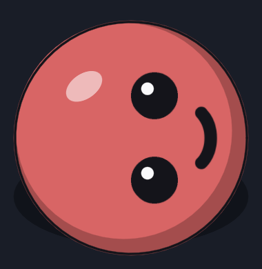

Parear este celular
No PC, rode python -m remoto.api_http --parear e digite
o código de 6 dígitos aqui. Ele vale 5 minutos.
📝 Pedir
Rodando agora
Agentes
🔧 Codex
Fila de trabalho
Próxima postagem
Fábricas
Erros recentes
Na vila agora
Paralelismo
Capacidade
Modelos
Limites
Fluxo
Acessos
Oficina do Codex
⛔ Pedidos de permissao
👥 Equipe
Contratar
Politica de permissoes
Gerente
Trabalho
Serviços
O que aconteceu
Propostas
Pedidos
Conversa
O que o orquestrador decidiu sozinho
🎨 Sprites para conferir
🏛️ Assembleia das IAs
Controle
Gerar
🏛️ Convocar assembleia
Mensagem para o orquestrador
O que você mandou
Controlar o PC
Últimos que você mandou
Biblioteca
Como anda um pedido
Do que você escreve até a resposta. Tudo roda no PC, no coordenador (o servidor), que passa pelos pedidos a cada 5 s. O app e o Telegram só entregam o pedido e mostram o andamento.
/responder <id> continua um-
1 · Mesa de pedidos
MesaPedidosGuarda o pedido e responde na hora o que entendeu e quando começa (a fila e o que segura). Pergunta curta de estado (“o app está no ar?”) não vira pedido: vai ao cérebro, que responde em segundos. Saudação ou pergunta de status de uma lista fixa (“oi”, “bom dia”, “coordenador?”, “orquestrador?”, “qual o progresso?”, “alguma novidade?”, “status”) é só conversa: nunca entra na fila de trabalho, e a resposta vem em segundos, em português simples; agradecimento solto (“ok”, “valeu”, “obrigado”, “beleza”) recebe um “de nada” e o lembrete do Responder. A lista é comparada inteira: qualquer outro texto, mesmo curto (“reinicie o app”, “pode ligar o gerente?”), é sempre um pedido novo, e nunca gruda num pedido que já existe. Para continuar um pedido (em qualquer situação), toque Responder no próprio pedido, ou no Telegram mande
/responder <id> <texto>com o id que vem no aviso.↳ a resposta do Grimório volta ao pedido que a esperava; se nenhum esperava, vira pedido novo. Se a opção escolhida traz uma ação do servidor (ligar o gerente), o servidor executa na hora e responde -
2 · Orquestrador
trabalhadorUm trabalhador de cargo “orquestrador”, contratado pelo coordenador, trabalha numa worktree só dele (
E:\projetos-wt). É o Claude; se o Claude está proibido, acima do teto ou no limite, o Codex assume os pedidos de construir (os outros esperam). A última linha da resposta dele é o DESFECHO (feito, bloqueado ou falhou), e só ela decide; sem ela, o servidor pede uma vez, mandando de volta a resposta original dele, e, faltando de novo, o pedido fica esperando você ler a resposta. A resposta que chega a você é sempre a original, com o desfecho declarado depois. Enquanto o coordenador chama o trabalhador (cria a worktree), o pedido aparece como chamando o trabalhador; a sua resposta nesse meio não se perde.↳ caiu no limite do Claude: ver Limite do Claude, abaixo↳ só respondeu, sem mudar código: respondido, direto para a resposta (pula o vigia e o conferente) -
3 · Permissão
se ele pedirSe o trabalhador precisa sair do combinado, ele pede e para. A regra da categoria decide:
- gerente aceita — o gerente da equipe libera e retoma sozinho (só com o gerente ligado; desligado, a pergunta vem a você);
- pergunta a você — aviso no Telegram e um cartão em Agora › Equipe (Permitir, Negar, Permitir sempre). Decisão de produto vira nó no Grimório;
- nega — a tarefa não segue. Mexer em conta é sempre negado.
Mudar o estado do servidor (gerente, renovação, paralelo) pedido pelo trabalhador é sempre pergunta a você, com aviso no Telegram e os botões Permitir e Negar no próprio pedido (texto não aprova nem nega); aprovado, o próprio servidor executa, relê para conferir e responde.
-
4 · Despachante
remoto.delegarCuida da worktree e da entrega: os eventos do trabalhador ao vivo (a Oficina, em Agora › Codex), o diff e o validador: só a entrega vazia é recusada; fora da lista, binário e diff grande entram com aviso.
-
5 · Vigia
a cada 1 minTesta a área da entrega, espera um momento seguro (sem publicação em voo; não espera horário), aplica na árvore principal, faz o commit por caminho e pede o reinício do serviço que mudou. Teste vermelho: o trabalhador recebe uma correção.
↳ não aplicou: ver Conflito, abaixo -
6 · Conferente
só lêOutro trabalhador olha a entrega já aplicada, sem mudar nada. APROVADO → conferido. DEFEITOS → falhou, com a lista.
-
7 · Resposta
app + TelegramA resposta final aparece na conversa (Agora › Coordenador, e no cartão Pedir) e chega no Telegram: ✅ conferido, 🧭 respondido ou ❌ falhou.
O que o app mostra: recebido → trabalhando → entregue → conferido; e também respondido, em espera, parado no limite — volta sozinho, esperando você (com o nó, quando é no Grimório), o servidor está executando, chamando o trabalhador e falhou.
Quando algo dá errado
A rodada caiu no limite (da sessão ou da semana). O pedido fica parado_limite sem gastar nenhuma das 5 retomadas, e volta a andar sozinho quando o uso renova. Pedido de construir não espera: o Codex assume na hora. Uma resposta sua ao pedido (Responder) com o Claude no limite também vai ao Codex, com o pedido inteiro.
O trabalhador precisa de uma decisão sua. O pedido fica esperando você no Grimório e o Telegram avisa qual nó. Quando você responde, a resposta volta ao mesmo pedido e ao mesmo orquestrador, que continua de onde parou. Se a decisão já estava tomada, ela volta na hora, sem perguntar de novo. Se você responder no próprio pedido (Responder) antes, ele segue sem esperar.
A entrega não entra (conflito com o que mudou no meio, teste vermelho de novo depois da correção): o vigia contrata um integrador, que junta os dois lados, roda os testes e entrega de novo. Árvore principal com mudança por commitar nos mesmos arquivos não é conflito: a entrega espera, avisa uma vez depois de 1 h e entra sozinha quando limpar. Publicação em voo também só faz esperar. Entrega vazia não é conflito: vira nada a aplicar.
Quando o mesmo trabalhador cai 5 vezes (o coordenador retoma a cada 2 min; 10 min sem sinal conta como queda), quando a linha DESFECHO diz falhou, ou quando o conferente aponta defeitos. Relançamento que o despachante recusa só por espera (paralelo cheio, a janela de começar) não conta como queda, e a recusa aparece no motivo. O Telegram avisa.
Para ver: Agora › Coordenador mostra o pedido com o motivo; Agora › Equipe e Agora › Codex abrem o log do trabalhador.
Para reabrir: no PC, python -m coordenador reabrir-pedido
<id>. Zera as retomadas e o mesmo trabalhador continua.
Pelo app, o botão Responder do pedido faz o mesmo, com a sua mensagem (no
Telegram, /responder <id>). Uma mensagem solta sempre abre
um pedido novo.
Trabalhador já limpo: se a worktree dele já foi limpa (ou a ficha sumiu), a sua resposta vai a um orquestrador novo, com a história do pedido (o seu texto, a última resposta e a sua resposta); se o despachante recusar o novo, o pedido falha com o motivo da recusa, sem tentar a cada pulso. A cobrança do desfecho não contrata ninguém: o pedido fica esperando você ler a resposta.
Um pedido pode ainda pedir uma ação da lista fechada (as histórias, os testes do coordenador) no repositório principal: fica executando, nunca publica, espera a janela da postagem quando a ação mexe no estoque, e o resultado volta ao mesmo orquestrador.
👕 Provador
Troque as peças de um lutador como num jogo de vestir. O jogo sorteia uma combinação fixa para cada lutador; o cadeado guarda a sua escolha.
Carinha: neutra
Lutador de exemplo: dá para experimentar, mas só um lutador de verdade guarda escolha.
🎨 Montar sprites
Cada desenho é uma parte parada. O jogo junta tudo e faz o movimento.

Carinha: neutra
carregando…
✂️ Recortar folha
Folha da IA com fundo verde ou magenta. Cada desenho vira uma variante nova. Arquivo com o nome da peça e da carinha (“olhos-furia.png”) já abre no lugar certo.
A IA desenha os olhos lado a lado; no jogo, visto de cima, eles ficam um em cima do outro.
Ateliê antigo (animação de lado)
🖌️ Ateliê
Importar
Escolha um pergaminho.